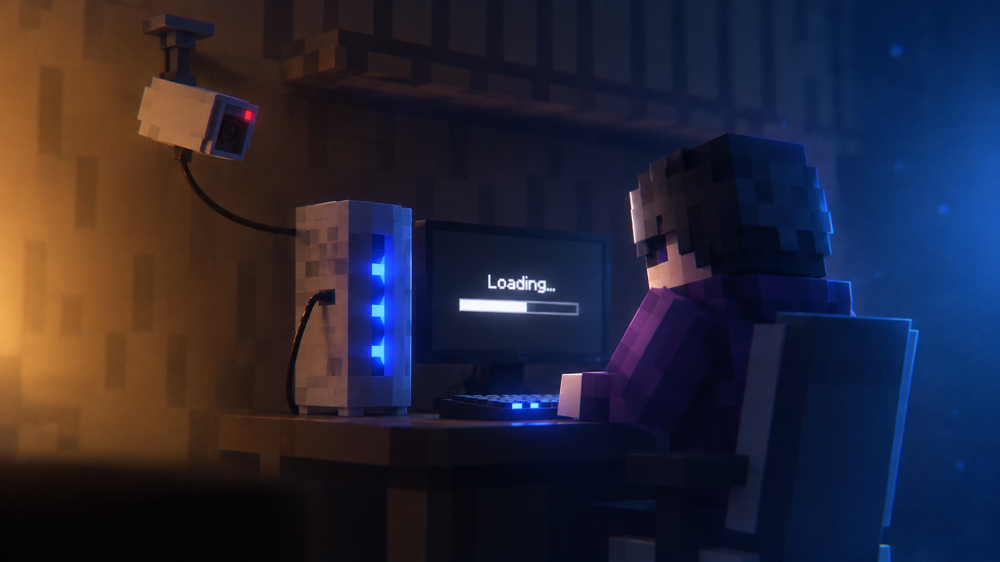
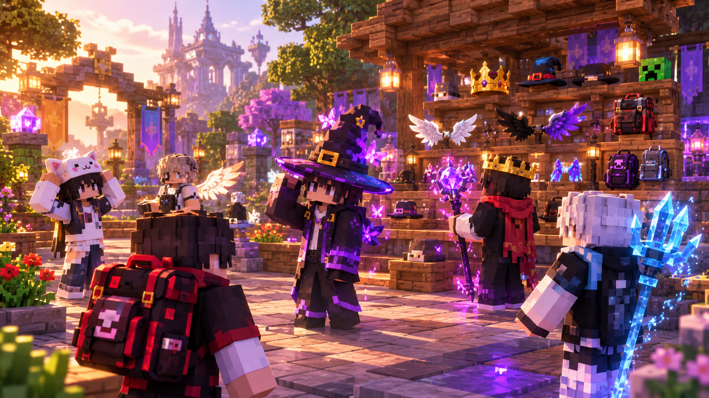
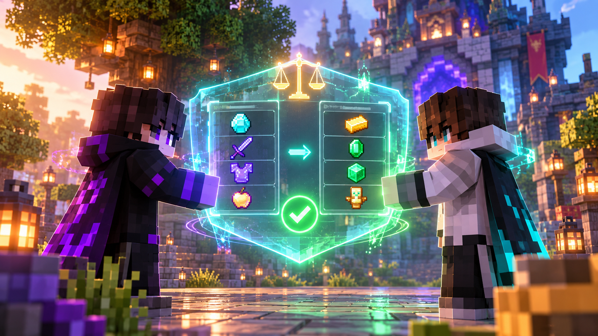
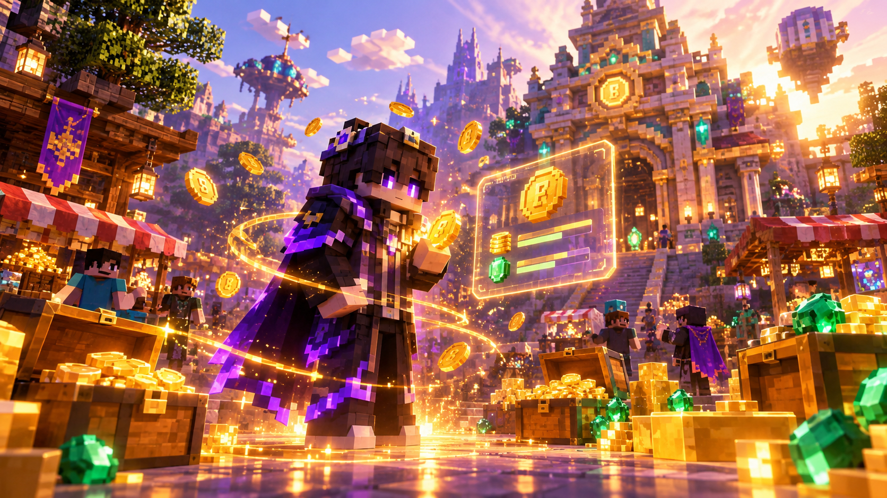
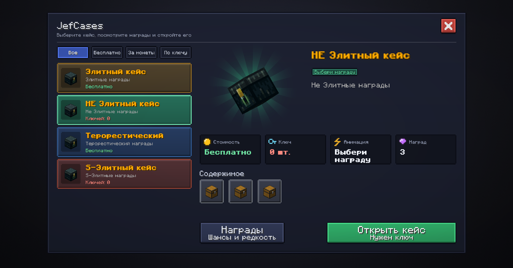

GribCam
GribCam — плагин для управления игровыми камерами через компьютер и наблюдения за миром Minecraft.
Александр, 16 лет. Пишу и настраиваю плагины для Minecraft. Уровень — Middle.
Сейчас делаю: плагины для Paper
Меня зовут Александр, мне 16 лет, я живу в Узбекистане. Специализируюсь на разработке и конфигурации плагинов для Minecraft-серверов. Мой уровень — Middle: беру задачи от простой настройки до готовой игровой системы.
Работаю один и отвечаю за результат целиком: от обсуждения задачи до финальной проверки. Могу уделять заказам 12–16 часов в неделю.
Пять проектов для Minecraft-серверов.

GribCam — плагин для управления игровыми камерами через компьютер и наблюдения за миром Minecraft.

GCosmetics — плагин с косметическими предметами, которые игроки могут носить на голове, спине и руке.

JefTrade для Paper 1.21.8 — плагин безопасного обмена предметами, валютой и опытом с защитой от дюпов и обмана.

JefCoins для Paper 1.21.6+ — плагин экономики с банковским меню, переводами между игроками и историей транзакций.

JefCases — система открытия кейсов с разными анимациями и наградами. Проект находится в разработке.
Почему GribCam и GCosmetics закрыты. Эти плагины сделаны на заказ, и заказчик попросил сохранить исходный код конфиденциальным. Код JefTrade и JefCoins открыт — его можно посмотреть на GitHub.
Итоговая цена зависит от задачи и сложности плагина. Называю её до начала работы.
Установлю плагин и полностью настрою его под ваш сервер.
Цена зависит от объёма настройки.
Напишу плагин под вашу идею — от небольшой утилиты до сложной системы.
Цена зависит от сложности плагина.
Напишите, что нужно сделать или настроить, — я оценю задачу и отвечу с ценой. Все контакты — по кнопке.